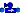
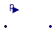
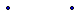

EEB.Components.BaseComponents.Water.Pressurisers.IdealWaterPressuriser
EEB.Components.BaseComponents.Water.Pressurisers.IdealWaterPressuriser
| Name | Description |
|---|---|
|  IdealWaterPressuriser | |
| IdealWaterPressuriser_pfixed |
EEB.Components.BaseComponents.Water.Pressurisers.IdealWaterPressuriser

Extends from Interfaces.Water.PartialTwoPort_water (Partial component with two ports).
| Type | Name | Description |
|---|---|---|
| WaterFlange | water_flange2 | |
| WaterFlange | water_flange1 | |
| input RealInput | p |

Extends from Interfaces.Water.PartialTwoPort_water (Partial component with two ports).
| Type | Name | Default | Description |
|---|---|---|---|
| Pressure | Pref | 101325 | reference pressure [Pa] |
| Type | Name | Description |
|---|---|---|
| WaterFlange | water_flange2 | |
| WaterFlange | water_flange1 |